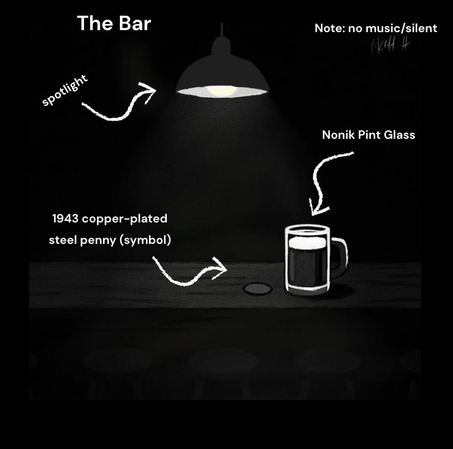
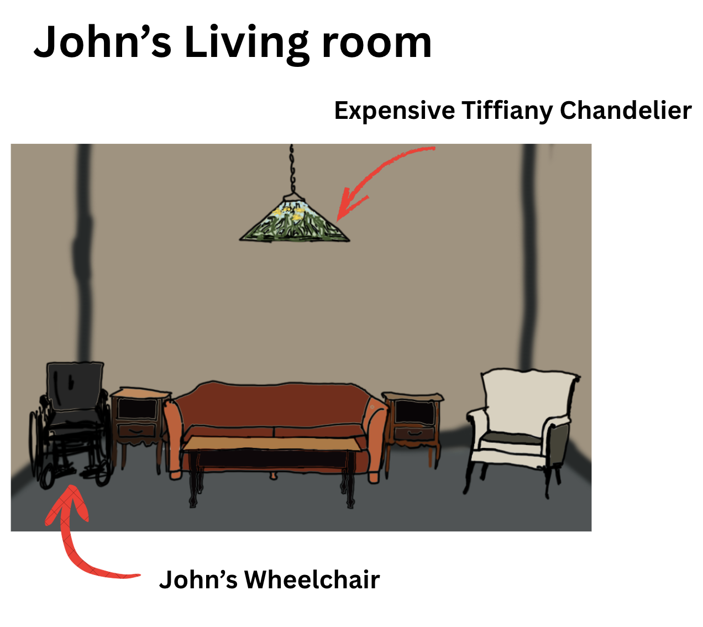
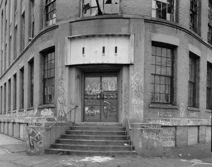
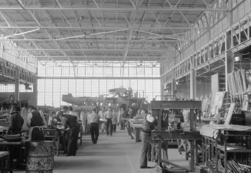
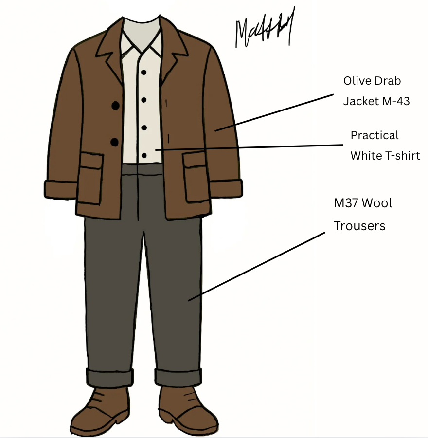
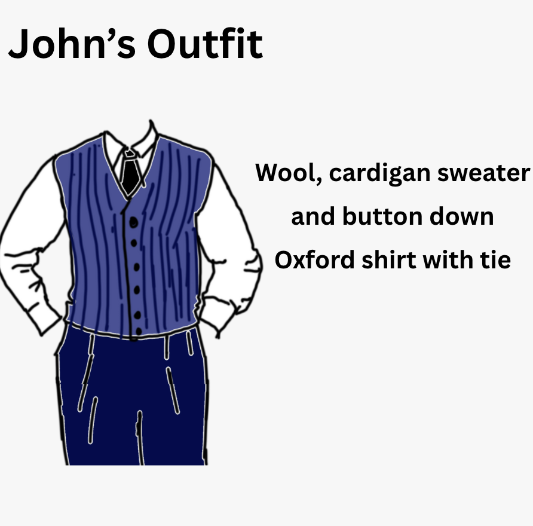
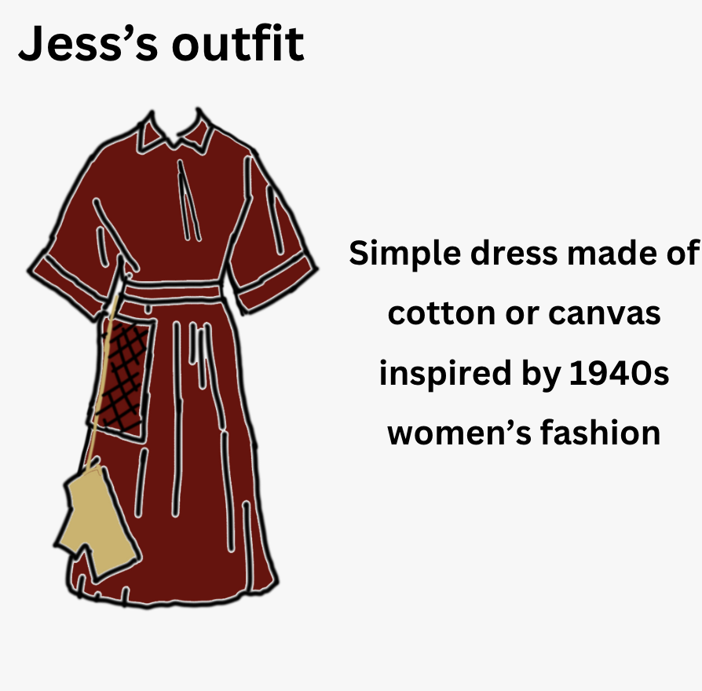
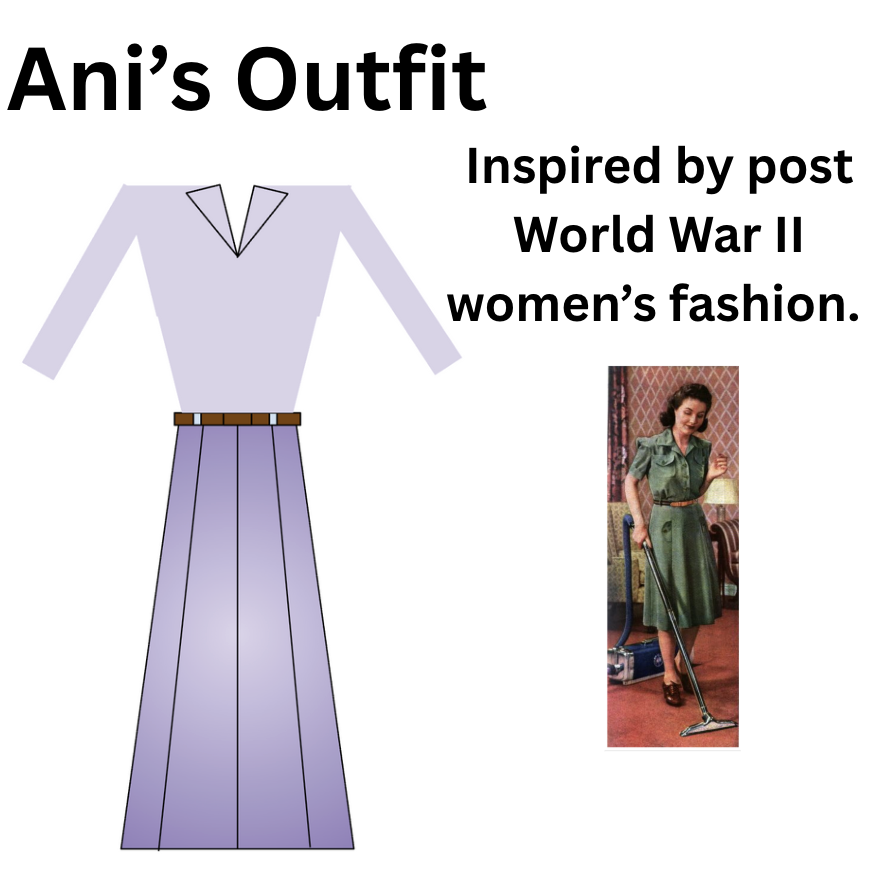
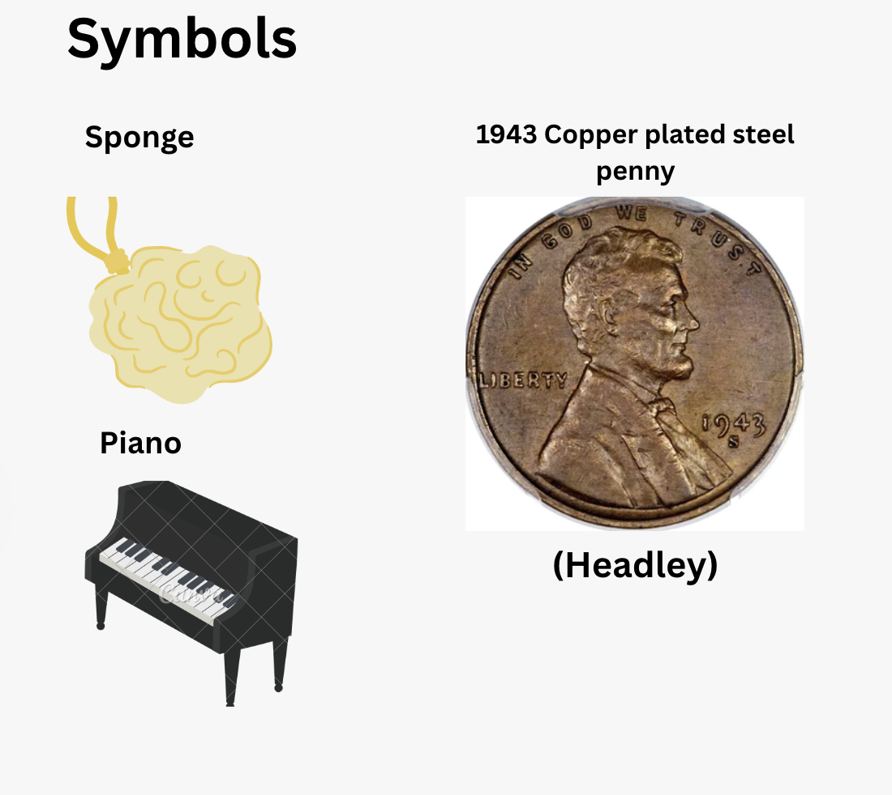

Vision and Concept
Unifying idea/main message:
The purpose of the play, to us at least, is that transactions or money influence relationships by making them either transactional or genuine.
John, a wealthy man with cerebral palsy hires Jess—a woman struggling to make it financially despite having many jobs—as his caretaker.
Throughout the play, John seems to give Jess many signals of affection, and he seems to invite her on a date.
However, towards the climax of their relationship, in a turn of events John reveals that he is going on a date with a graduate student, not Jess.
As a response to Jess’s emotional response to the turn of events, John offers to “pay” (Majok 127) Jess “for the whole [evening]” (Majok 127): essentially to John this relationship was completely based on employer and employee.
Hence, this relationship between John and Jess was entirely transaction based.
Moreover, Eddie and Ani’s relationship also starts as a transactional relationship.
Eddie returns to Ani’s house and their discussions consist of Ani paying Eddie back for paying for her insurance, “I’ll pay it back” (Majok 53), and Eddie retrieving his boxes, “I’ll send you the list. A list. Of my stuff” (Majok 52).
Because their discussion was based on payments and possessions, their relationship in this scene is transactional.
So in practicality, we believe that the play should be experienced in both a realistic and capitalistic way: it should fully embody what the 1940s felt like, while still maintaining the themes of relationships and money.
Money is the Cost Of Living: the fabricator of transactional, fraudulent, and true relationships.
Sets & Scenes
Eddie’s Bar Scene

Props: 1943 copper-plated steel penny, nonik pint glass, and bar stools.
John’s Apartment

Props: Wheelchair, razor, resume, shopping bag.
Ani’s Apartment

Props: Eddie’s boxes, record player, wheelchair, sponge, ash tray.
Setting Inspiration
Note: to match the color scheme shown in the picture, our play will be taken in the “Film Noir” style (in black and white).

Fig 1. This image is inspiration for Ani's Apartment set design.
(The Rise and Fall of Manufacturing)

Fig 2. This image is inspiration behind the climate and mood of the play.
(DaRosa)

Fig 3. The inspiration behind the insides of buildings within the manufactering state of connecticut.
(DaRosa)
Costume Designs
Eddie's Costume
NOTE: Inspired by WWII soldier clothing, mixed with civilian blue collar worker attire.




Symbolic Objects

The Sponge: Exposure and Vulnerability.
The Piano: Peace in the context of communication.
The 1943 Copper-Plated Steel Penny: The value of a relationship measured in currency.
Works Cited
Alexqm. “An Army Field Jacket for the Ages, the M43 Jacket and Its Four Pocket Fundamentals.” QM Fashion, 15 Feb. 2011, https://qmfashion.wordpress.com/2011/02/15/an-army-field-jacket-for-the-ages-the-m43-jacket-and-its-four-pocket-fundamentals/.
“Claire McCardell - ‘Pop-over’ - American - the Metropolitan Museum of Art.” The Metropolitan Museum of Art, https://www.metmuseum.org/art/collection/search/84029. Accessed 4 Nov. 2025.
DaRosa, Andrew. “#TBT: A Snapshot into Life in Connecticut’s Factories.” Connecticut Post, 26 Mar. 2020, https://www.ctpost.com/living/slideshow/TBT-201079.php.
“German M37 Wool Trousers.” Www.Atthefront.Com, https://www.atthefront.com/product-p/gutm37.htm. Accessed 4 Nov. 2025.
Headley, Susan. “1943 Copper Penny – Is Yours Genuine or Fake?” The Spruce Crafts, 9 Sept. 2024, https://www.thesprucecrafts.com/genuine-or-fake-1943-copper-penny-768883. Accessed 11 Nov. 2025.
“1940s House Dresses, Home Frocks.” https://vintagedancer.com/1940s/1940s-house-dresses-home-frocks/. Accessed 3 Nov. 2025.
“It’s Been a Long, Long Time (2014 Remastered Version)” by Harry James and His Orchestra & Kitty Kallen. Apple Music, 1 Oct. 1945, https://music.apple.com/us/album/its-been-a-long-long-time-single-2014-remastered-version/821876711.
Majok, Martyna. Cost of Living. Theatre Communications Group, 2020.
“The Rise and Fall of Manufacturing in Bridgeport: The Case of Bryant Electric - Connecticut History | a CTHumanities Project.” Connecticut History | a CTHumanities Project - Stories about the People, Traditions, Innovations, and Events That Make up Connecticut’s Rich History, 26 Jan. 2021, https://connecticuthistory.org/the-rise-and-fall-of-manufacturing-in-bridgeport-the-case-of-bryant-electric/.
Things We Did Last Summer by Frank Sinatra on Apple Music. 1 Jan. 1946. music.apple.com, https://music.apple.com/us/song/things-we-did-last-summer/404465010.